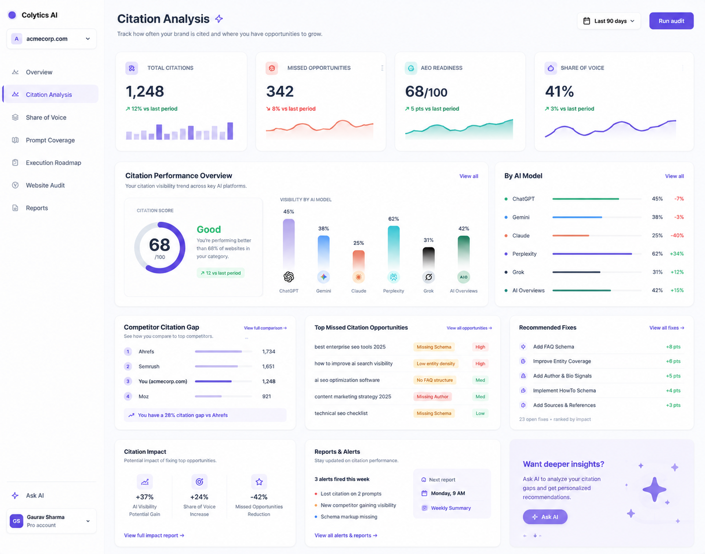
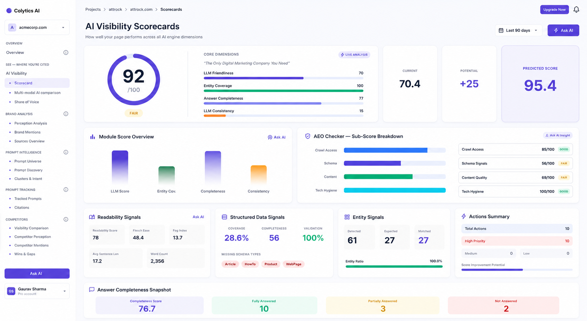
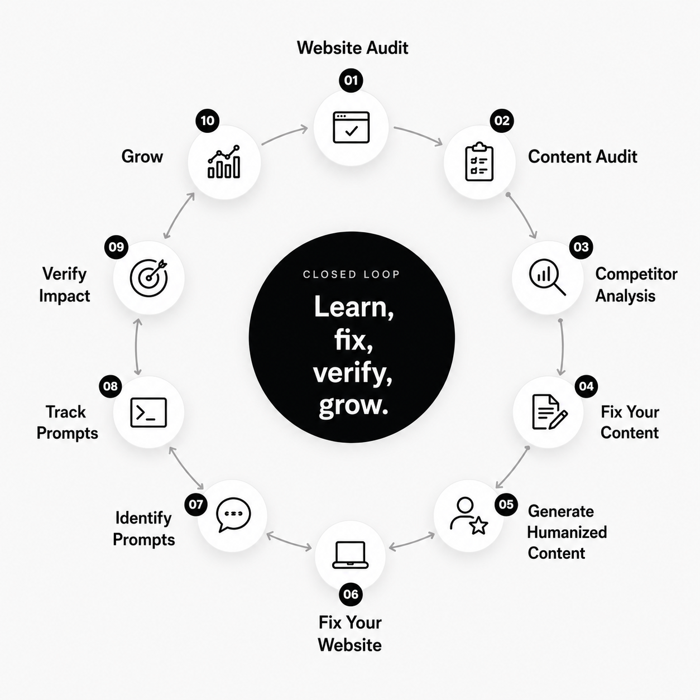
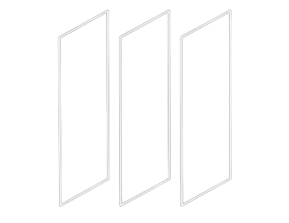

Get cited.
Everywhere your buyers ask.
One closed loop for AI visibility and AEO — audit, diagnose, fix, generate and track citations across every major AI model, built by a 12-year-old Marketing agency that lived the problem.

THE SHIFT
Search didn't evolve. It was replaced.
AI assistants now synthesize the answer directly — no ten blue links, no click. Roughly 58% of informational queries now end inside an AI answer. The question stopped being "do we rank" — it's now "do we get cited" — and if not, "why, and what do we fix"
Traditional search
Users click through 10 blue links. Rankings determine visibility.
AI-powered search
One synthesized answer. One source gets cited. One brand wins.
AI engines tracked by Colytics
The answer layer is being written now, with or without your brand.
THE PROBLEM
You can’t fix what you can’t see.
Two incomplete camps leave the real gap untouched: traditional SEO tools show rankings, while AI visibility monitors show the scoreboard without the playbook.
Traditional SEO tools
Rankings, backlinks, and crawl health are useful — but they do not tell you when AI systems cite your competitors or skip your brand entirely.
Blind spot: Rankings, not citations.
AI visibility monitors
They surface citations and share of voice, but not the website-level diagnosis that explains how to improve them.
Blind spot: A scoreboard, no playbook.
Five blind spots
- Which prompts trigger competitor citations
- Why a specific page fails to get cited
- How to create content AI actually wants to cite
- Whether that content passes AI detection at scale
- How citation gains turn into real traffic and revenue
See the structural reason competitors win.
WHAT COLYTICS AI IS
Not a monitor. An intelligence system.
Colytics AI closes the loop between seeing what changed, understanding why it changed, and knowing what to do next.
It remembers
Running memory of audits, scores, and fixes so every new report builds on the last one.
It tracks
Mentions, share of voice, competitors, and model shifts across every AI engine.
It recommends
A ranked to-do list scored by Impact × Effort × Urgency.
Give the team intelligence, not another dashboard.
SAMPLE REPORT
See a real report — before you sign up.
Preview shows the AIVS score, top citation gaps, and a ranked fix list. The full PDF stays gated behind email capture.

The preview is free.
THE AEO LIFECYCLE (CIRCULAR LOOP)
One closed loop. No other platform runs it.
Every pass learns what worked and feeds it back into your scores, priorities and content briefs — so Colytics gets sharper with every cycle.

Why the loop matters
Every pass learns what worked and feeds it back into your scores, priorities and content briefs — so Colytics gets sharper with every cycle.
Run the whole lifecycle in one system.
THE SOLUTION
Four moves. One closed loop.
Colytics runs your AI visibility as a continuous loop — every pass feeds the next, so it gets sharper the more you use it. Four moves:
See — AI Citation Intelligence
Track citations, share of voice, buyer prompts and competitors across every engine — know where you’re cited and where you’re not.
Diagnose — Website & Content Intelligence
AIVS™ plus per-page LCS™ and structure/schema analysis explain why each page is or isn’t being cited.
Act — Content & Fixes
A ranked roadmap and citation-ready content generation in your voice — validated to read as human.
Prove — Impact & Growth
GA4-linked attribution ties AI citations to traffic, conversions and revenue so you can prove impact.
Run the entire loop in one system.
MODULES Inside the platform
Nine connected modules from audit to cited content to revenue — no extra tools
Website & Content Analyzer
Crawls and scores every page for AI-readiness, citation potential, content quality and technical AEO health.
Structured Data & AI Files
Schema, `llms.txt`, `facts.json` so AI engines read and trust your content.
AI SEO / AEO Visibility
Answer-completeness & entity scoring, LLM answer simulator, actions ranked by citation lift.
Keyword → Prompt Intelligence
Transforms keywords into buyer prompts, scored and mapped to content gaps.
Prompt Tracking & Multi-Model Tester
Tracks prompts across engines with prompt → response → cited-URL trails.
Competitor AI Intelligence
Where competitors get cited and why; prompt-wins library, source-gap map, alerts.
Reports & Alerts
Weekly reports + alerts on lost citations, model drift, and new rivals.
Impact Analytics
AI citations → GA4 traffic, conversions and revenue.
Content Generation & AI Detection
Long-form citation-ready content, validated humanized and AEO-ready.
The edge isn’t one feature — it’s the combination:
- Prompt intelligence
- Structured data & AI files
- Content auditing
- Citation-ready generation
Generate content that gets cited.
THE INTELLIGENCE LAYER
Proprietary scoring as a customer benefit.
One clear score, one predicted outcome, and one ranked next step — so customers know exactly what to do next.
AIVS
One number from 7 dimensions / 29 parameters
Scores performance across every AI engine in a single proprietary value your customers can understand instantly.
- Cross-engine visibility in one score
- 7 dimensions, 29 weighted parameters
LCS
Predict citation likelihood before you publish
Page-level intelligence that estimates whether a page is likely to earn AI citations before it goes live.
- Forecast citation likelihood early
- Improve pages before publishing
IEU
Impact × Effort × Urgency
Ranks every recommendation so teams know which action will create the biggest gain fastest.
- Prioritize by impact, effort, and urgency
- Turn scores into ranked next steps
Get one clear number and the ranked next step.
ASK AI
Don't read the dashboard. Ask It
Every chart, score and alert has an Ask AI button. It explains what you are seeing, why it changed, and the best next move, in plain language.
- Plain-language answers on any screen
- Tells you the why and the next action
- No training, no manual
Why did Gemini share change
Your Gemini share slipped because a competitor published structured comparison pages. Add Product schema and an FAQ block to pricing, ranked High impact / Low effort. Open the fix
You recovered 41 lost citations and lead on Perplexity; the biggest gap is comparison content on ChatGPT.
One-page report ready:
Connect to Claude - MCP
Bring Colytics into Claude. Upcoming feature
CMOs and managers don't log in - connect Colytics to Claude via MCP and ask how the brand/team is performing, then pull a report in the chat.
- Ask in plain English from inside Claude
- Live answers from your data, no login
- Generate and pull reports in the chat
WHY WE’RE DIFFERENT
Built by the agency that lived the problem.
A product of Attrock — a 12-year-old marketing agency, 100+ brands, 15+ countries. Scoreboard vs playbook: we give the why, the ranked fix, the content and the revenue proof.
You get a partner who has already seen the playbook across channels, industries, and growth stages — not a generic AI visibility dashboard.
Partner with operators who’ve done it 100+ times.
The Difference
The Gap no other tool closes.
Traditional SEO tools track rankings; AI visibility monitors track citations; neither tells you why you're not cited or fixes it. Colytics connects both — and runs the full loop.
Citation detection
SEO tools
Monitors
Colytics
Multi-model tracking
SEO tools
Monitors
Colytics
Share of Voice tracking
SEO tools
Monitors
Colytics
Website crawl & technical audit
SEO tools
Monitors
Colytics
Content structure analysis
SEO tools
Monitors
Colytics
Schema & structured data intelligence
SEO tools
Monitors
Colytics
Citation readiness scoring
SEO tools
Monitors
Colytics
Why you were not cited (diagnosis)
SEO tools
Monitors
Colytics
Prioritized fix recommendations
SEO tools
Monitors
Colytics
Execution roadmap with impact scoring
SEO tools
Monitors
Colytics
"AI visibility monitors show you the scoreboard. Colytics gives you the playbook."
Who It's For
From solo consultants to enterprise brands.
Any size, 10,000+ pages, no cap.
SEO & Growth Agencies
- Clients ask why they’re invisible in AI, and your current tools can’t answer — so you standardize AI audits fast.
- Defend and differentiate retainer value with white-label reports and clear citation-gap analysis.
- Expand content opportunities without adding headcount.
" We finally had a clean way to show where clients were missing in AI search — and why the retainer deserved to stay. "
Agency Lead — Early Access
Brand & Marketing Teams
- The CMO keeps asking where you show up in ChatGPT, and rankings alone don’t answer it.
- Prove revenue impact with GA4 attribution, citation-gap analysis, and benchmarks.
- Build a backlog ranked by citation impact — enterprises don’t need a special plan.
" For the first time, we had a way to explain AI visibility in a language leadership actually cared about. "
Head of Digital — Early Access
Consultants & Solopreneurs
- Six disconnected tools leave you drowning in what to fix first.
- Use one platform with a ranked roadmap so you know what matters next.
- Ship client-ready content without needing a writer.
" It replaced the tool sprawl and gave me a much clearer next step for every client. "
Independent SEO Consultant — Early Access
Whatever your seat, there’s a fit.
How It Works
Three steps to AI visibility and AEO intelligence.
Connect Your Domain
Add your website URL. Add prompts and topics. Colytics begins crawling, analyzing content structure, and mapping your schema coverage.
Setup Target Domain
Target Prompts
See Your Citation Gaps
Within minutes, see where competitors are cited and you are not. Understand the structural reasons behind every gap.
Citation Gap: 'best seo tools'
Missed CitationChatGPT Response
"Top options include Competitor A and Competitor B for enterprise teams needing scalable SEO workflows..."
Why you missed this:
- Missing relevant Schema markup
- Content lacks structured lists
- Low entity density for "enterprise seo"
Execute the Fix List
Get a prioritized roadmap of content, schema, and structural changes ranked by expected citation impact. Ship fixes. Track gains.
Prioritized Fixes
Add SoftwareApplication Schema
Expected Impact: High
Structure pricing page data
Expected Impact: Medium
Increase entity density on /enterprise
Expected Impact: Medium
Your first audit is minutes away.
The Time & Money Calculator
What does flying blind actually cost
Move the sliders - the math is yours to tune.
saved every month with Colytics AI vs. your multiple tools
| Module & Lifecycle Work | Manual | Multiple Tools | Colytics AI | Save vs Manual | Save vs Tools |
|---|---|---|---|---|---|
| A · Website & Content Analyzer | 8.0 | 3.0 | 0.50 | 7.50 h | 2.50 h |
| B · Structured Data & AI Files | 6.0 | 2.5 | 0.50 | 5.50 h | 2.00 h |
| C · AI SEO / AEO Visibility | 7.0 | 3.0 | 0.75 | 6.25 h | 2.25 h |
| D · Keyword → Prompt Intelligence | 6.0 | 2.5 | 0.50 | 5.50 h | 2.00 h |
| E · Prompt Tracking & Multi-Model | 10.0 | 4.0 | 0.50 | 9.50 h | 3.50 h |
| F · Competitor AI Intelligence | 6.0 | 3.0 | 0.50 | 5.50 h | 2.50 h |
| G · Reports & Alerts | 5.0 | 2.5 | 0.25 | 4.75 h | 2.25 h |
| H · Impact Analytics | 4.0 | 2.0 | 0.25 | 3.75 h | 1.75 h |
| I · Content Generation & Detection | 16.0 | 6.0 | 1.50 | 14.5 h | 4.50 h |
| Total per site / month | 68.0 | 28.5 | 5.25 | 62.75 hrs | 23.25 hrs |
Colytics runs the lifecycle in ~ 5.25 hrs/site/mo vs ~ 28.5 with separate tools.
Illustrative benchmarks for a monthly AEO cycle, based on agency experience — starting points you can tune. "Multiple tools" assumes a typical stack (rank tracker + AI monitor + schema tool + AI writer + detector). Defaults: $375/mo example stack, $75/hr blended rate.
Reclaim the time and budget you lose flying blind.
Simple pricing for every team
14-day refund on paid plans · annual billing 20% off
Pro
Everything to compete in AI search.
Get early access to the full platform.
What is Colytics
Colytics is an AI citation intelligence platform that monitors whether your content is cited by major AI engines (ChatGPT, Gemini, Claude, Perplexity and Grok) and diagnoses why citations are or aren't happening. It combines automated citation tracking with actionable insights to optimize your visibility in AI-generated answers.
What happens after I register
You receive immediate access to the dashboard. Add your domain, and your first citation analysis begins within minutes. No setup calls or waiting lists.
How do you measure AI citation visibility
Colytics tracks how nine AI engines (ChatGPT, Gemini, Claude, Perplexity and Grok) respond to prompts relevant to your industry. We detect whether your brand, pages, or competitors are cited — then analyze the structural reasons behind each gap, including content structure, schema coverage, entity clarity, and fact density.
What is the Ask AI feature
Ask AI lets you query your citation data using natural language. Powered by Claude and our proprietary analysis engine, it answers questions like 'which content gaps caused my citation drop' or 'what schema changes would improve visibility' without manual report review.
Does Colytics replace traditional SEO tools
No. Colytics operates in a different layer — AI citation intelligence. You can use Colytics alongside your existing SEO stack. We diagnose why you are or are not being cited in AI answers, which is a question traditional SEO tools were never designed to answer.
What site sizes does Colytics support
Colytics works with any site size — from small businesses to enterprise properties with 10,000+ pages. There is no upper limit on crawl capacity. We optimize based on your site structure and citation needs.
How often are citation checks refreshed
Weekly for tracked prompts. On-demand audits are available at any time. You can also set up alerts for citation drops, new competitor appearances, or model behavior changes.
Is there a free plan
Yes. Our Starter plan is free and includes one project, basic website auditing, and limited crawl capacity. No credit card required. We also offer Pro plan for free during your first 60 days to let you experience all features risk-free.
What plans are available
We offer two core plans: Starter (free forever) for individuals and small teams, and Pro for agencies and growing businesses. Pro includes multiple projects, advanced citation tracking, Ask AI feature, and white-label reporting. Annual plans are available at 20% off monthly pricing.
Who is behind Colytics
Colytics is built by Attrock, a 12-year-old digital marketing agency specializing in SEO, content strategy, and marketing analytics. We created Colytics to solve the AI citation visibility problem we saw across our client base.
What is your refund policy
We offer a 14-day refund window from the date of your first paid subscription. If Colytics does not meet your expectations within the first 14 days, contact support for a full refund. After 14 days, subscriptions are non-refundable but can be cancelled at any time.
Can I upgrade or downgrade my plan
Yes. Upgrades take effect immediately — the prorated difference is applied to your current billing cycle. Downgrades take effect at the start of your next billing cycle. No penalties or lock-in contracts.
Do you offer annual billing discounts
Yes. Annual plans are available at 20% off compared to monthly billing. Founding members on early access receive additional pricing benefits.
Can I use Colytics for multiple client websites
Yes. Our Pro plan supports multiple projects. Each gets its own crawl, citation analysis, and reporting. White-label reporting capabilities are available for agencies.
Is my data secure
All data is encrypted in transit and at rest. Colytics does not share your data with third parties. Your competitive citation data is visible only to your team. We are working toward SOC 2 compliance as part of our enterprise readiness roadmap.
Colytics AI

Your competitors are already being cited.
Enterprise Ready